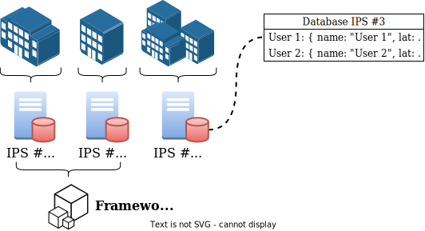

Current Indoor Positioning Systems (IPS)
Problems With Current IPSs
- Users not in control of their data
- No interoperability between positioning systems and applications

Decentralised Interoperable Architecture

Decentralised Interoperable Architecture
Decentralised Interoperable Architecture
Vocabularies
Core vocabularies:
- SOSA
- SSN
Allignment vocabularies:
- GeoSPARQL
- QUDT
- SSN-Systems
See paper for more details ...


Properties and Observations
Properties and Observations
http://ipin2022.solidweb.org/properties/orientation.ttl
turtle
PoC Demonstrator

![](data:image/svg+xml,%3Csvg%20xmlns%3D%22http%3A%2F%2Fwww.w3.org%2F2000%2Fsvg%22%20viewBox%3D%220%200%2037%2037%22%20shape-rendering%3D%22crispEdges%22%3E%3Cpath%20fill%3D%22%23ffffff%22%20d%3D%22M0%200h37v37H0z%22%2F%3E%3Cpath%20stroke%3D%22%23000000%22%20d%3D%22M4%204.5h7m2%200h5m2%200h4m2%200h7M4%205.5h1m5%200h1m2%200h1m2%200h6m4%200h1m5%200h1M4%206.5h1m1%200h3m1%200h1m1%200h1m3%200h1m1%200h1m3%200h2m2%200h1m1%200h3m1%200h1M4%207.5h1m1%200h3m1%200h1m1%200h4m1%200h5m4%200h1m1%200h3m1%200h1M4%208.5h1m1%200h3m1%200h1m1%200h1m2%200h3m2%200h5m1%200h1m1%200h3m1%200h1M4%209.5h1m5%200h1m1%200h1m1%200h1m1%200h1m1%200h3m1%200h1m1%200h1m1%200h1m5%200h1M4%2010.5h7m1%200h1m1%200h1m1%200h1m1%200h1m1%200h1m1%200h1m1%200h1m1%200h7M12%2011.5h2m2%200h1m2%200h2m3%200h1M4%2012.5h1m1%200h5m3%200h5m2%200h1m2%200h1m1%200h5M5%2013.5h3m1%200h1m2%200h2m1%200h1m1%200h1m3%200h8m3%200h1M4%2014.5h4m1%200h3m1%200h1m1%200h2m2%200h1m1%200h1m3%200h2M4%2015.5h1m1%200h1m2%200h1m8%200h1m6%200h1m1%200h1m1%200h1m1%200h1M4%2016.5h1m1%200h6m3%200h9m5%200h2M4%2017.5h3m1%200h1m2%200h1m1%200h3m5%200h4m1%200h3m3%200h1M5%2018.5h1m1%200h1m2%200h2m2%200h2m2%200h2m1%200h1m3%200h1m1%200h4M7%2019.5h2m3%200h3m1%200h1m7%200h2m1%200h2m2%200h1M4%2020.5h1m1%200h3m1%200h1m1%200h6m1%200h3m2%200h1m4%200h2M4%2021.5h1m1%200h2m3%200h1m1%200h2m1%200h2m3%200h4m1%200h3m1%200h1m1%200h1M4%2022.5h1m2%200h1m1%200h2m2%200h2m2%200h3m2%200h1m1%200h2m2%200h1m1%200h1M4%2023.5h1m1%200h1m2%200h1m2%200h1m1%200h1m1%200h1m1%200h2m6%200h1m1%200h1m2%200h1M4%2024.5h1m2%200h2m1%200h5m4%200h3m1%200h6m1%200h3M12%2025.5h2m1%200h1m1%200h1m6%200h1m3%200h5M4%2026.5h7m5%200h4m2%200h3m1%200h1m1%200h3M4%2027.5h1m5%200h1m1%200h1m4%200h1m4%200h3m3%200h1M4%2028.5h1m1%200h3m1%200h1m1%200h2m2%200h1m1%200h4m2%200h5m1%200h3M4%2029.5h1m1%200h3m1%200h1m1%200h3m6%200h5m1%200h1m1%200h4M4%2030.5h1m1%200h3m1%200h1m1%200h8m2%200h2m1%200h7M4%2031.5h1m5%200h1m3%200h1m3%200h1m1%200h1m3%200h1m1%200h2m1%200h1m1%200h1M4%2032.5h7m1%200h1m1%200h2m5%200h1m1%200h1m1%200h3m2%200h1%22%2F%3E%3C%2Fsvg%3E%0A)
PoC Demonstrator

PoC Demonstrator

PoC Demonstrator

PoC Demonstrator

PoC Demonstrator

PoC Demonstrator

PoC Demonstrator

PoC Demonstrator
http://.../properties/position.ttl
turtle
PoC Demonstrator
http://.../properties/position.ttl
turtle
PoC Demonstrator
http://.../properties/position.ttl
turtle
PoC Demonstrator
sparql
Conclusion and Future Work
- Novel architecture for decentralising location data
- User remains in control of their data
- Interoperability between systems and applications
- Handover of tracking between systems
- Single navigation application
- High-level decision fusion
- Vocabulary extensible with additional semantics

A Solid-based Architecture for Decentralised Interoperable Location Data
Maxim Van de Wynckel and Beat Signer
![](data:image/svg+xml,%3Csvg%20xmlns%3D%22http%3A%2F%2Fwww.w3.org%2F2000%2Fsvg%22%20viewBox%3D%220%200%2041%2041%22%20shape-rendering%3D%22crispEdges%22%3E%3Cpath%20fill%3D%22%23ffffff%22%20d%3D%22M0%200h41v41H0z%22%2F%3E%3Cpath%20stroke%3D%22%23000000%22%20d%3D%22M4%204.5h7m1%200h1m3%200h2m2%200h2m1%200h2m1%200h2m2%200h7M4%205.5h1m5%200h1m1%200h3m2%200h1m2%200h1m1%200h1m1%200h2m1%200h1m2%200h1m5%200h1M4%206.5h1m1%200h3m1%200h1m2%200h1m6%200h2m1%200h1m2%200h1m3%200h1m1%200h3m1%200h1M4%207.5h1m1%200h3m1%200h1m1%200h1m1%200h1m1%200h1m1%200h1m1%200h1m3%200h1m2%200h2m1%200h1m1%200h3m1%200h1M4%208.5h1m1%200h3m1%200h1m3%200h5m2%200h1m2%200h1m2%200h2m1%200h1m1%200h3m1%200h1M4%209.5h1m5%200h1m2%200h3m2%200h1m3%200h3m1%200h2m2%200h1m5%200h1M4%2010.5h7m1%200h1m1%200h1m1%200h1m1%200h1m1%200h1m1%200h1m1%200h1m1%200h1m1%200h1m1%200h7M12%2011.5h2m2%200h1m4%200h2m1%200h1m2%200h1M4%2012.5h1m1%200h2m1%200h3m1%200h1m1%200h1m2%200h1m1%200h6m4%200h1m2%200h1m1%200h2M4%2013.5h1m3%200h1m2%200h1m1%200h4m3%200h1m1%200h6m2%200h2m1%200h4M4%2014.5h3m1%200h3m2%200h1m2%200h1m1%200h1m2%200h1m5%200h1m3%200h3m2%200h1M4%2015.5h6m1%200h1m1%200h6m3%200h1m1%200h1m1%200h3m2%200h1m1%200h1m2%200h1M5%2016.5h1m1%200h6m2%200h1m3%200h1m2%200h2m1%200h1m1%200h1m1%200h1m1%200h3m1%200h2M5%2017.5h2m1%200h2m2%200h2m1%200h1m4%200h3m4%200h1m1%200h1m1%200h1m1%200h1m1%200h1M5%2018.5h1m3%200h2m5%200h1m1%200h4m3%200h2m3%200h2m2%200h1M4%2019.5h1m1%200h3m3%200h1m2%200h2m1%200h1m1%200h1m1%200h5m1%200h3m1%200h1m1%200h1M4%2020.5h2m2%200h1m1%200h2m1%200h1m3%200h1m1%200h2m1%200h4m1%200h1m1%200h2m1%200h1m1%200h1M4%2021.5h3m1%200h1m4%200h1m1%200h1m1%200h1m1%200h1m1%200h1m3%200h6m1%200h2m1%200h2M5%2022.5h1m2%200h1m1%200h1m1%200h10m2%200h1m1%200h1m4%200h2m1%200h1M4%2023.5h1m3%200h1m3%200h1m1%200h1m1%200h1m1%200h1m4%200h1m1%200h1m1%200h2m1%200h1m1%200h1m2%200h1M4%2024.5h3m3%200h1m1%200h4m2%200h1m3%200h3m3%200h1m4%200h3M4%2025.5h2m1%200h3m3%200h1m2%200h1m2%200h1m1%200h2m5%200h1m1%200h2m2%200h1m1%200h1M6%2026.5h1m1%200h7m1%200h2m2%200h3m2%200h3m1%200h1m2%200h2m1%200h2M5%2027.5h4m2%200h1m2%200h1m3%200h1m1%200h1m2%200h1m2%200h3m1%200h1m1%200h1m2%200h2M4%2028.5h1m1%200h2m1%200h3m1%200h2m1%200h1m2%200h1m1%200h1m4%200h8m2%200h1M12%2029.5h1m2%200h1m2%200h4m1%200h1m3%200h2m3%200h2m1%200h1M4%2030.5h7m1%200h1m1%200h2m2%200h1m4%200h1m2%200h3m1%200h1m1%200h1M4%2031.5h1m5%200h1m1%200h5m6%200h1m1%200h4m3%200h3m1%200h1M4%2032.5h1m1%200h3m1%200h1m2%200h1m1%200h1m1%200h2m2%200h1m2%200h1m2%200h6m1%200h2M4%2033.5h1m1%200h3m1%200h1m1%200h3m1%200h3m2%200h5m5%200h1m3%200h2M4%2034.5h1m1%200h3m1%200h1m1%200h3m1%200h3m3%200h2m2%200h1m1%200h4M4%2035.5h1m5%200h1m3%200h1m1%200h1m1%200h6m2%200h3m2%200h3m2%200h1M4%2036.5h7m1%200h1m1%200h9m1%200h2m1%200h1m4%200h3%22%2F%3E%3C%2Fsvg%3E%0A)